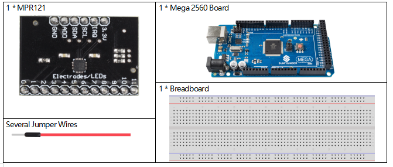
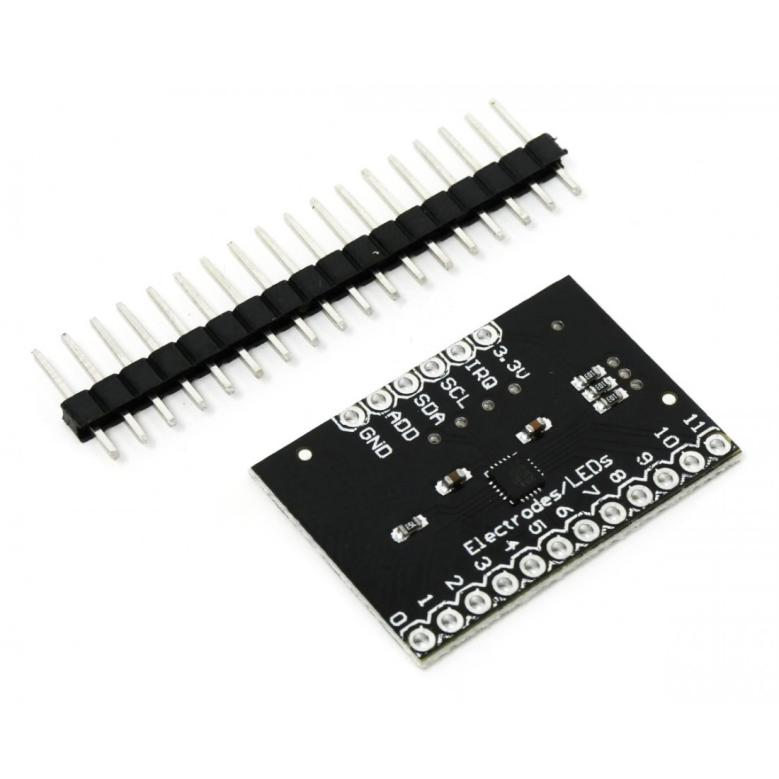
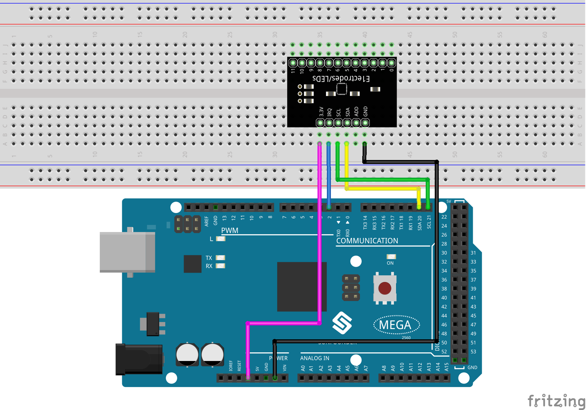

2.24 MPR121-Modul¶
Überblick¶
In dieser Lektion lernen Sie, wie Sie MPR121 verwenden. Dies ist eine gute Option, wenn Sie Ihrem Projekt viele Touch-Schalter hinzufügen möchten. Die Elektrode von MPR121 kann mit einem Leiter verlängert werden. Wenn Sie einen Draht an eine Banane anschließen, können Sie die Banane in einen Berührungsschalter verwandeln und so Projekte wie Obstklavier realisieren.
Erforderliche Komponenten¶
Komponenteneinführung
{kind=link}
Fügen Sie Ihrem nächsten Projekt viele Berührungssensoren hinzu, indem Sie dieses benutzerfreundliche kapazitive 12-Kanal-Breakout-Board für Berührungssensoren mit dem MPR121 verwenden. Dieser Chip kann bis zu 12 einzelne Touchpads verarbeiten.
Der MPR121 unterstützt nur I2C, das mit nahezu jedem Mikrocontroller implementiert werden kann. Mit dem ADDR-Pin können Sie eine der 4 Adressen auswählen, um insgesamt 48 kapazitive Touchpads auf einem I2C-2-Draht-Bus zu verwenden. Die Verwendung dieses Chips ist viel einfacher als die kapazitive Erfassung über einen Analogeingang: Er kann alle Filter für Sie übernehmen und für eine höhere / niedrigere Empfindlichkeit konfiguriert werden.
Wenn der MPR121 eine Änderung erkennt, zieht er einen Interrupt-Pin LOW. Die Steuerplatine überprüft diesen Pin, um festzustellen, ob er während der Schleife LOW ist. Dazu benötigt dieser Sensor auch Zugriff auf einen anderen digitalen Pin.
Elektroden¶
Die Elektrode ist ein Berührungssensor. Typischerweise können Elektroden nur ein Stück Metall oder ein Draht sein. Abhängig von der Länge des Drahtes oder dem Material auf der Elektrode kann es jedoch manchmal schwierig sein, den Sensor auszulösen. Aus diesem Grund können Sie mit dem MPR121 konfigurieren, was zum Auslösen und Auslösen einer Elektrode erforderlich ist.
Fritzing Circuit¶
In diesem Beispiel fügen wir MPR121 in das Steckbrett ein. Stellen Sie die GND von MPR121 an GND, 3,3 V an 3 V3, IRQ an den digitalen Pin 2, SCL an den Pin SCL (21) und SDA an den Pin SDA (20). Es gibt 12 Elektroden für die Berührungserkennung. Hinweis: Der MPR121 wird mit 3,3 V und nicht mit 5 V betrieben.
{kind=link}
Schematische Darstellung¶

Code¶
Die Codes verwenden den MPR121_JM. h Bibliothek. Informationen zum Importieren von Bibliotheken finden Sie in Teil 4 - 4.1 Hinzufügen von Bibliotheken.
Nach dem Hochladen der Codes auf die Mega2560-Karte wird der Touch-Status der Pins von MPR121 (1) und (0) angezeigt Aufgenommen in einem booleschen 12-Bit-Array, das auf dem seriellen Monitor gedruckt wird.
Code-Analyse¶
Die Funktion des Moduls ist in der Bibliothek MPR121_JM.h enthalten.
#include <MPR121_JM.h>
Bibliotheksfunktionen:¶
MPR121(int irqpin,uint8_t touThresh,uint8_t relThresh)
Erstellt eine neue Instanz des MPR121.
irqpin: der Interrupt-Anforderungs-Pin.
touThresh: : Berührungsschwelle, Die Elektrode wird als Schwelle des Zustands 「Berührung」 recognized erkannt.
relThresh: Freigabeschwelle, Die Elektrode wird als Schwelle des Zustands 「Freigabe」 recognized erkannt.
Der Bereich des Elektrodendatenwerts liegt zwischen 0 und 255. Für eine typische Berührungsanwendung kann der Schwellenwert beispielsweise im Bereich von 0x05 bis 0x30 liegen. Je kleiner der Wert, desto empfindlicher ist er. Die Einstellung des Schwellenwerts hängt von der tatsächlichen Anwendung ab. Im Allgemeinen ist die Berührungsschwelle geringfügig größer als die Freigabeschwelle für das Entprellen und die Hysterese von Berührungen.
void mpr121_setup()
MPR121-Modul einrichten.
bool checkInterrupt()
Wenn sich der Elektrodenzustand ändert, gibt die Funktion einen Booleschen Wert 「0」 returns zurück.
uint16_t readTouchInputs()
Der Berührungszustand der Elektrode erzeugt einen Booleschen Wert. Diese Funktion akkumuliert die von allen Elektroden nacheinander erzeugten Booleschen Werte in einer 12-Bit-Binärzahl als Rückgabewert. Wenn die erste und die elfte Elektrode berührt werden, wird (100000000010) zurückgegeben.
Phänomen Bild¶